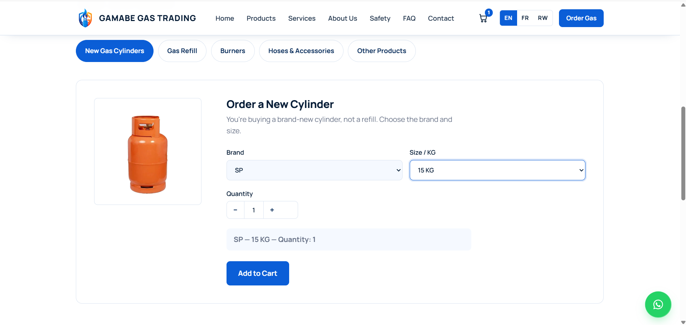

01
WEB APPLICATION / BUSINESS WEBSITE

BUSINESS WEBSITE - RESPONSIVE INTERFACE
WEB & SOFTWARE PROJECT
Gamabe LTD — Business Website
Developed and maintained a business website for Gamabe Gas Trading, with product browsing and an online ordering interface.
Project highlights
- Responsive business website interface
- Product catalogue and ordering flow
- Multi-language website experience